Psicoterapia para adultos, adolescentes, idosos e casais — online e presencial em Niterói.
Ansiedade, luto, relações e as perguntas que insistem em voltar.
Saber mais →Escuta adequada a cada fase da vida, com a família próxima.
Saber mais →Um espaço para que os dois possam falar e ser escutados.
Saber mais →Oito contextos, do acompanhamento clínico aos documentos psicológicos previstos em lei.
Saber mais →Escolhas de curso, transições de carreira e aposentadoria.
Saber mais →Você escreve pelo WhatsApp contando o que procura.
Um encontro para nos conhecermos e entendermos o caminho.
Sessões regulares. Nota fiscal para reembolso do plano.
Tudo o que é dito em sessão é protegido pelo sigilo profissional (Art. 9º do Código de Ética Profissional do Psicólogo). Presencial no Plaza Corporate Offices — sala 818, Niterói — ou online.
Sou Danielly Curione, psicóloga clínica e psicanalista em Niterói. Trabalho com adultos, adolescentes, crianças, idosos e casais — presencialmente, na sala 818 do Plaza Corporate Offices, e também online.
Minha prática se apoia na psicanálise: menos respostas prontas, mais espaço para que aquilo que ainda não tem nome possa ser dito. Cada processo tem um ritmo, e ele é seu.
O que você conta em sessão fica em sessão. O sigilo profissional é dever previsto no Art. 9º do Código de Ética Profissional do Psicólogo e é a base que torna possível falar sem receio — inclusive sobre o que é difícil de dizer em voz alta.
Atendo também mulheres em situação de violência, com discrição e encaminhamento à rede de proteção quando necessário.
{{ servicePage.intro }}
A vida adulta traz desafios únicos: responsabilidades, relacionamentos, escolhas profissionais, perdas e mudanças que, muitas vezes, geram sofrimento emocional ou sensação de sobrecarga.
Na psicoterapia com adultos, ofereço um espaço seguro e acolhedor para que você possa falar livremente sobre suas experiências, emoções e conflitos internos, desenvolvendo maior autoconhecimento e recursos para lidar com as dificuldades do dia a dia.
O atendimento infantil usa o brincar e o desenho como linguagem, já que a criança ainda não tem todas as palavras para o que sente.
A adolescência é uma fase de intensas transformações físicas, emocionais e sociais. Nesse período, surgem questionamentos sobre identidade, autoestima, relações familiares, amizades, escolhas profissionais e tantos outros desafios que podem gerar ansiedade, tristeza ou dificuldades de adaptação.
Na psicoterapia com adolescentes, ofereço um espaço seguro, acolhedor e sem julgamentos, onde ele ou ela possa falar livremente sobre seus sentimentos e experiências, desenvolvendo recursos internos para enfrentar as demandas dessa etapa da vida.
O envelhecer é um processo natural, mas que pode trazer mudanças significativas: aposentadoria, perdas, alterações na saúde, transformações nos vínculos familiares e sociais. Muitas vezes surgem sentimentos de solidão, ansiedade, tristeza ou dificuldades de adaptação às novas etapas da vida.
Na psicoterapia com idosos, ofereço um espaço de escuta sensível e respeitosa, onde cada história de vida é valorizada. É um momento para falar sobre as emoções, ressignificar experiências e fortalecer a autoestima e a autonomia.
O atendimento de casais é um espaço de escuta mútua, acolhedor e sem julgamentos, onde ambos têm a oportunidade de falar e serem ouvidos.
A proposta é ajudar o casal a compreender seus conflitos, melhorar a comunicação, resgatar o vínculo afetivo e fortalecer o relacionamento diante de impasses, crises ou mudanças na vida a dois.
Por meio da escuta, da observação e, quando necessário, de instrumentos específicos, esse processo ajuda a dar sentido às vivências e necessidades individuais.
Pode acontecer em diferentes contextos, sempre com ética e responsabilidade, oferecendo ao final uma devolutiva que acolhe, orienta e favorece o autoconhecimento.
Um modelo de avaliação psicológica que vai além do diagnóstico tradicional: avaliação e intervenção caminham juntas, de modo que o próprio processo avaliativo já produz um efeito terapêutico. Pode ser procurada em diferentes contextos:
Investiga o funcionamento cognitivo, emocional e comportamental, relacionando cérebro e comportamento — atenção, memória, linguagem, raciocínio e funções executivas. É aplicada, entre outros contextos, em:
Entrevistas clínicas, observação e, quando necessário, testes psicológicos aprovados pelo Conselho Federal de Psicologia. Ao final, uma devolutiva e a entrega do documento psicológico adequado à finalidade, elaborado de acordo com a legislação do CFP.
A orientação profissional é um processo psicológico que ajuda a pessoa a escolher, repensar ou redirecionar sua carreira, considerando interesses, habilidades, personalidade e a realidade de vida de cada um.
O processo não define a profissão por você — oferece subsídios para que a decisão seja sua, mais informada e menos ansiosa.
Este espaço vai reunir reflexões sobre saúde mental, psicanálise e os temas que atravessam a clínica.
A mensagem é montada aqui e enviada direto pelo WhatsApp. Nada fica registrado neste site.
A sala 818, no Plaza Corporate Offices, em Niterói, está disponível para sublocação a outros profissionais da saúde. Um espaço acolhedor, com estrutura completa, pronto para atendimentos.
Consultar disponibilidadePlaza Corporate Offices, sala 818 — Centro, Niterói. Fácil acesso e estacionamento no prédio.
Sala mobiliada, ambiente climatizado e recepção compartilhada.
Períodos avulsos ou fixos, sob consulta — fale pelo WhatsApp para verificar a agenda.
Os dados coletados neste site (quando você preenche o formulário de agendamento) são usados exclusivamente para montar a mensagem enviada ao WhatsApp de Danielly Curione. Nenhum dado é armazenado, processado ou compartilhado por este site.
O conteúdo de sessões e prontuários é protegido pelo sigilo profissional, previsto no Art. 9º do Código de Ética Profissional do Psicólogo.
Em conformidade com a Lei Geral de Proteção de Dados (Lei 13.709/2018), você pode solicitar informações sobre eventuais dados de contato mantidos pela profissional através dos canais informados na página de Contato.
